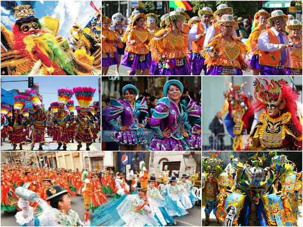

Tradiciones y Costumbres
- Tradición es cada una de aquellas pautas de convivencia que una comunidad considera
dignas de constituirse y mantenerse de generación en generación.Las costumbres
son formas de comportamiento particular que asume toda una comunidad y que la distinguen
de otras comunidades; como sus danzas, fiestas, comidas, idioma o artesanía.

Nombre:Karen Estefany Rivera Herrera
Grado:2° general
Sección:"C"